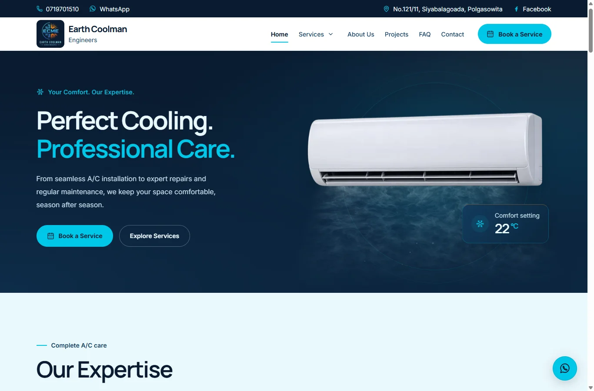
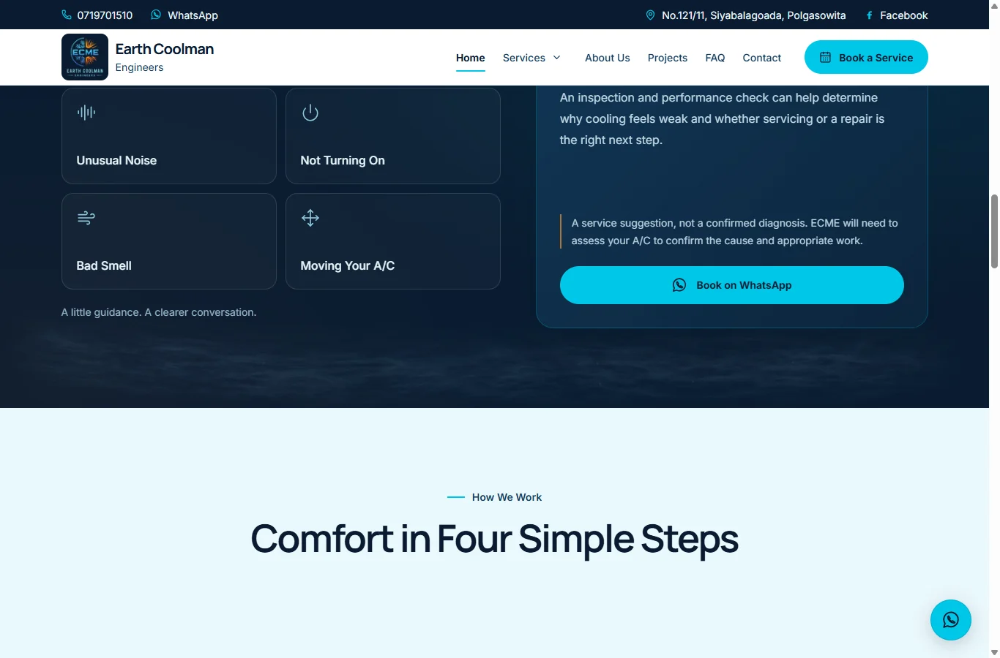
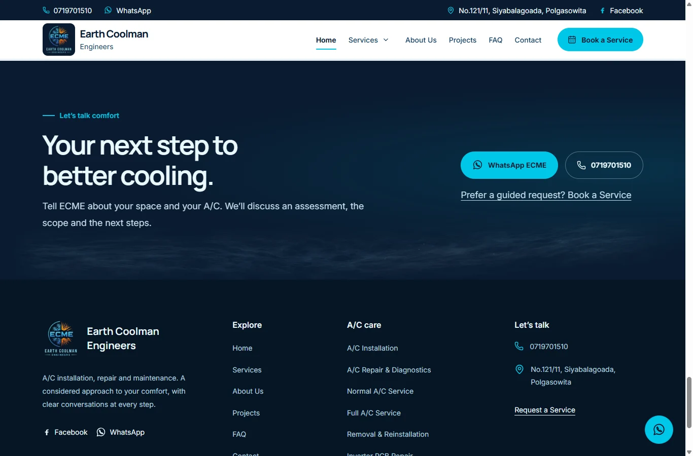
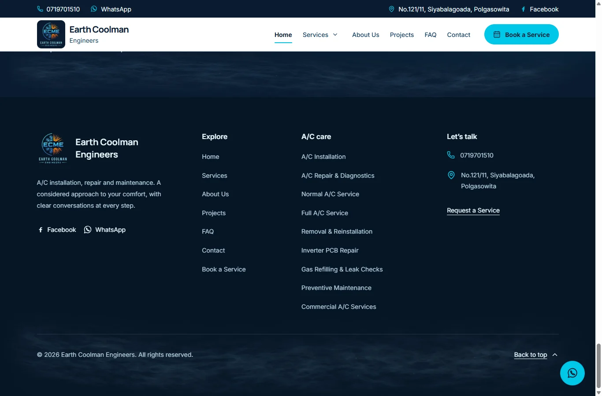
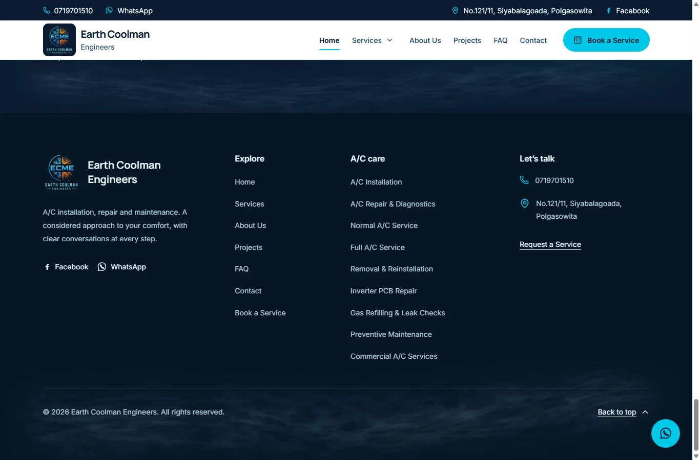
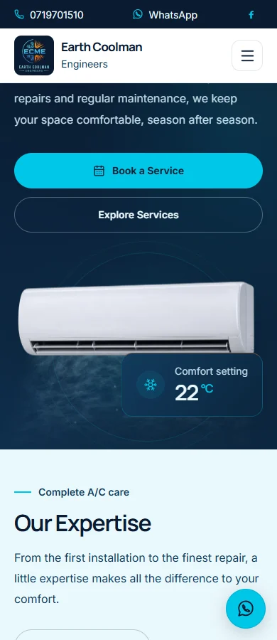
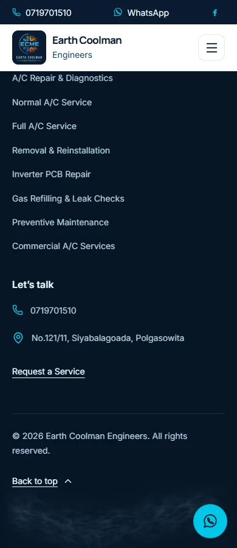

ECME cooling motion review Actual browser captures over six seconds, with no simulated animation in this review. The video records the vapor Canvas; page frames show its placement behind the existing content.
Frame differences, rendering cadence and checks
hero-desktop 1366px viewport · 23.4% of Canvas pixels visibly changed / 23.5% of Canvas pixels visibly changed / 24.2% of Canvas pixels visibly changed 
Start of capture After six seconds section-desktop 1366px viewport · 44.5% of Canvas pixels visibly changed / 46.7% of Canvas pixels visibly changed / 46.4% of Canvas pixels visibly changed 
Start of capture After six seconds cta-desktop 1366px viewport · 44.5% of Canvas pixels visibly changed / 46.6% of Canvas pixels visibly changed / 46.6% of Canvas pixels visibly changed Start of capture 
After six seconds footer-desktop 1366px viewport · 49.8% of Canvas pixels visibly changed / 52.1% of Canvas pixels visibly changed / 51.4% of Canvas pixels visibly changed 
Start of capture 
After six seconds hero-mobile 390px viewport · 23.3% of Canvas pixels visibly changed / 23.3% of Canvas pixels visibly changed / 22.8% of Canvas pixels visibly changed Start of capture 
After six seconds footer-mobile 390px viewport · 51.5% of Canvas pixels visibly changed / 57.8% of Canvas pixels visibly changed / 52.8% of Canvas pixels visibly changed Start of capture 
After six seconds